4.1 Overview
Layer 4 gives agents continuity and knowledge. Without it every run starts from zero, cannot honour user preferences, cannot cite enterprise documents and cannot learn from previous actions. The diagram shows four stores: short-term memory (conversation history), long-term memory (user preferences, knowledge, past actions), a vector store (embeddings and index) and a knowledge graph (entities and relationships).
The layer is accessed exclusively through the Memory Manager in Layer 2. That indirection is deliberate: agents ask for context and hand back observations; they never issue queries against a store. The manager applies tenant scoping, budgets the context in tokens and decides where each write belongs.
4.2 Architecture

Mermaid source diagrams/memory-flow.mmd
flowchart LR
subgraph AGENT["Agent Runtime"]
A[Sub-Agent]
MM[Memory Manager]
end
subgraph STM["Short-term memory"]
R[(Redis<br/>session · scratchpad · task state)]
end
subgraph LTM["Long-term memory"]
PG[(PostgreSQL<br/>preferences · episodes · audit)]
end
subgraph VS["Vector store"]
V[(Pinecone / Milvus / pgvector<br/>embeddings + index)]
end
subgraph KG["Knowledge graph"]
N[(Neo4j<br/>entities · relationships)]
end
EMB[Embedding model]
A -->|read context| MM
MM -->|1 recent turns| R
MM -->|2 user profile| PG
MM -->|3 semantic recall| V
MM -->|4 entity lookup| N
A -->|write observation| MM
MM -->|append| R
MM -->|consolidate| PG
MM -->|embed| EMB --> V
MM -->|extract entities| N
R -.->|summarize on overflow| PG
4.2.1 Short-term memory
Holds what the run needs now: the recent conversation window, the current task state and scratchpad notes (intermediate tool results, partial answers). It is small, hot and ephemeral.
- Store: Redis (lists for turns, hashes for task state, TTL per session), or an in-memory structure for single-worker prototypes.
- Bound: N most recent turns verbatim plus a rolling summary of older turns. When the list grows past the bound, the oldest half is summarised by a small model and the summary replaces it (memory compression).
- Context window management: the manager assembles the prompt from prioritised sections and trims from the lowest priority upward until it fits the budget (see
_fit_to_budgetincode-examples/memory_manager.py). Priority order in the reference implementation: recent turns > profile > semantic memories > graph entities.
4.2.2 Long-term memory
Durable facts about the user and the tenant, and an episodic record of what the system did.
- Preferences: language, tone, preferred formats, default cost centre.
- Facts: stable knowledge extracted from conversations ("user leads the EMEA pricing team").
- Episodes: completed objectives, decisions taken, approvals given.
- Summaries: compressed sessions.
Store in PostgreSQL (with pgvector for the embedded copy) or MongoDB. Each row carries tenant_id, user_id, kind, content, embedding, timestamps and an optional expires_at for retention policy. Writes happen at the end of a run (episode) or when an extraction step finds a durable fact; do not write every turn.
4.2.3 Vector store
Purpose: semantic search over unstructured content, both enterprise documents (RAG) and memories. Given a query embedding, it returns the nearest stored embeddings by cosine or dot-product similarity.
- Embeddings: dense vectors (768–3072 dimensions) from an embedding model (OpenAI
text-embedding-3, Cohere Embed, open models such as BGE, E5, GTE via Sentence-Transformers). Use the same model for indexing and querying; changing the model requires re-indexing. - Indexing: HNSW (graph-based; fast, memory-hungry, default for most stores), IVF/IVF-PQ (partitioned, compressed; large corpora), DiskANN (SSD-resident). Metadata is stored alongside vectors for filtering (tenant, ACL groups, document type, date).
- Similarity search: approximate nearest neighbours with metadata pre-filtering. Combine with sparse (BM25) retrieval for hybrid search, then re-rank the union with a cross-encoder.
| Technology | Deployment | Strengths | Considerations |
|---|---|---|---|
| Pinecone | Managed SaaS | Zero ops, serverless tiers, namespaces for tenancy | Data leaves your VPC unless on private deployment; cost at scale |
| Weaviate | Self-hosted or cloud | Hybrid search built in, modules for embedding, GraphQL API | Operational overhead self-hosted |
| Milvus / Zilliz | Self-hosted or cloud | High scale (billions), GPU indexing, many index types | Heavier to operate; needs etcd, MinIO, Pulsar |
| Qdrant | Self-hosted or cloud | Rust, efficient filtering, payload indexes | Smaller ecosystem |
| pgvector | Extension of PostgreSQL | One database for relational + vectors, transactions, ACL joins | HNSW performance fine to tens of millions of rows; beyond that specialise |
| FAISS | Library | Fastest local ANN, research-grade | No server, no filtering, no persistence layer; embed in a service |
| Chroma | Embedded / small server | Very simple developer experience | Prototyping and small deployments |
Start with pgvector unless the corpus is beyond ~20–50 million chunks or query latency requirements are extreme; a single database simplifies tenancy, ACL filtering and backups enormously.
4.2.4 Knowledge graph
Purpose: reasoning over connected information: who owns which product, which supplier delivers which component, which regulation applies to which process. Vector search finds similar text; a graph answers multi-hop questions ("which customers are affected if supplier X fails?") that similarity cannot.
- Store: Neo4j (Cypher), Amazon Neptune, TigerGraph, or a property graph on PostgreSQL (Apache AGE) for modest sizes.
- Population: entity and relation extraction from documents and conversations by an LLM extraction prompt with a fixed ontology, merged by canonical IDs; plus direct sync from systems of record (CRM accounts, ERP items).
- Retrieval: identify entities in the query (NER or LLM), fetch their k-hop neighbourhood, serialise as triples or short sentences into the context. GraphRAG-style community summaries help for global questions.
Use a graph only when the domain has a real relational structure that matters for answers. For many document-Q&A use cases a vector store with good metadata is enough.
4.3 RAG architecture integration
Retrieval-Augmented Generation is how enterprise knowledge enters the agent's context. In an agentic system it is exposed as a tool (retrieve_documents) that the Researcher and Analyst call, and as an internal step of the memory manager for semantic recall.

Mermaid source diagrams/rag-pipeline.mmd
flowchart LR
subgraph INGEST["Ingestion pipeline (offline)"]
SRC[Sources<br/>PDF · HTML · Confluence · DB] --> PARSE[Parse & clean]
PARSE --> CHUNK[Chunk<br/>semantic / recursive]
CHUNK --> ENR[Enrich<br/>metadata · ACLs]
ENR --> EMB1[Embed]
EMB1 --> IDX[(Vector index<br/>+ BM25 index)]
end
subgraph QUERY["Retrieval (online)"]
Q[Agent query] --> RW[Query rewrite<br/>HyDE / multi-query]
RW --> EMB2[Embed]
EMB2 --> HYB[Hybrid search<br/>dense + sparse]
IDX --> HYB
HYB --> ACL[ACL filter]
ACL --> RR[Re-rank<br/>cross-encoder]
RR --> CTX[Context window<br/>assembly]
CTX --> LLM[LLM generation<br/>with citations]
end
4.3.1 Document ingestion pipeline
- Connect and load. Connectors for SharePoint, Confluence, Google Drive, S3, databases, ticketing systems. Track source, version, ACL and last-modified for incremental re-indexing.
- Parse and clean. PDF (with layout-aware parsers such as Docling, Unstructured, Azure Document Intelligence), HTML, Office formats; extract tables as tables; OCR scanned pages; drop boilerplate.
- Chunking. Split into retrieval units. Options: fixed-size with overlap (simple, robust), recursive by structure (headings, paragraphs), semantic (embedding-similarity boundaries), or parent–child (retrieve small chunks, return the enclosing section). Typical sizes: 300–800 tokens with 10–20 % overlap. Attach metadata: title, section path, page, source URL, ACL groups, classification.
- Enrichment. Optional LLM-generated summaries, hypothetical questions per chunk, keyword extraction; improves recall at ingestion cost.
- Embedding generation. Batch embed with the chosen model; store the model name and version with the vector.
- Vector indexing. Upsert into the vector store with metadata; maintain a parallel BM25/full-text index for hybrid search; write chunk text to object storage or the database.
Run the pipeline as a workflow (Airflow, Prefect, Temporal, or a queue-driven service) with idempotent steps and per-document versioning so deletes and updates propagate.
4.3.2 Retrieval
- Query rewrite. Rephrase the agent's question for retrieval; multi-query (several paraphrases) or HyDE (embed a hypothetical answer) improve recall.
- Hybrid search. Dense ANN + sparse BM25, merged by reciprocal rank fusion.
- ACL filter. Filter by the user's groups (the principal on the run), never by the agent's identity. Enforce in the query, not after.
- Re-ranking. Cross-encoder (Cohere Rerank, BGE-reranker, ColBERT) over the top 50 to select the top 5–10.
- Context augmentation. Assemble chunks with source identifiers into the prompt, within the token budget; instruct the model to cite by identifier.
4.3.3 Evaluation
Measure retrieval and generation separately: recall@k and MRR on a labelled query set; faithfulness, answer relevance and context precision with RAGAS or equivalent LLM-judged metrics (see Observability).
4.4 Agent memory engineering
Memory is not one thing. Design each kind explicitly.
| Kind | Content | Storage | Written when | Retrieved by |
|---|---|---|---|---|
| Working / scratchpad | Intermediate results of the current task | Run state (checkpoint) | Every step | Direct (in state) |
| Conversational | Recent turns + rolling summary | Redis | Every turn | Always, bounded window |
| Episodic | What happened: objectives, decisions, approvals | PostgreSQL (+ embedding) | End of run | Semantic recall, time filters |
| Semantic (user/tenant facts) | Preferences, stable facts | PostgreSQL (+ embedding) | Extraction step | Always (profile) + semantic recall |
| Procedural | How to do things: learned tool sequences, prompt tweaks | Prompt registry / skills store | Curated, via HITL and evaluation | Loaded by agent type |
| Document knowledge | Enterprise corpus | Vector store + object storage | Ingestion pipeline | RAG tool |
| Relational knowledge | Entities and relationships | Knowledge graph | Extraction / sync | Entity lookup |
4.4.1 Memory compression
- Summarisation: replace old turns with an LLM summary; keep the summary itself bounded (re-summarise the summary).
- Extraction: turn conversations into discrete facts ("prefers tables over prose") and store facts, not transcripts.
- Deduplication: before writing a fact, search for near-duplicates (cosine > 0.9) and update instead of insert.
- Decay: episodic memories get an
expires_at; retention policies from Layer 9 apply.
4.4.2 Context management
The context window is a budget to be allocated, not a bucket to be filled. A useful default allocation for a 32k working context: 15 % system prompt and tool schemas, 25 % recent conversation, 30 % retrieved documents, 10 % memories and profile, 20 % headroom for the model's reasoning and output. Track actual usage per run in observability and tune.
Long-context models (200k–1M tokens) reduce but do not remove the need for management: cost is linear in tokens, latency grows, and models still attend better to well-curated context than to dumps.
4.5 Implementation guide
- Put tenant and user IDs on every row and in every query; test with two tenants in CI.
- Choose embedding dimensionality by need; 1024–1536 is the practical range. Store the model version; plan a re-index job.
- Use HNSW with
ef_searchtuned per latency target; measure recall against exact search on a sample. - Keep chunk text outside the vector index (object storage or a table) so the index stays small and text can be updated.
- Implement
forget_user(tenant, user)from day one; erasure requests arrive. - Snapshot Redis (AOF) if session loss is unacceptable; otherwise accept ephemeral short-term memory and rely on PostgreSQL history.
4.6 Example implementation
Context bundle assembly (from code-examples/memory_manager.py):
async def load_context(self, session_id, user_id, query, tenant_id="default"):
recent = await self._recent_turns(session_id) # Redis window + summary
profile = await self._profile(tenant_id, user_id) # Postgres preferences/facts
memories = await self._semantic_recall(tenant_id, user_id, query) # pgvector ANN
entities = await self._graph_context(query) if self.graph else [] # Neo4j neighbourhood
return self._fit_to_budget({"recent_turns": recent, "profile": profile,
"relevant_memories": memories, "entities": entities})
pgvector schema and index:
CREATE EXTENSION IF NOT EXISTS vector;
CREATE TABLE memories (
id BIGSERIAL PRIMARY KEY, tenant_id TEXT NOT NULL, user_id TEXT NOT NULL,
kind TEXT NOT NULL, content TEXT NOT NULL, embedding vector(1536),
created_at TIMESTAMPTZ DEFAULT now(), expires_at TIMESTAMPTZ);
CREATE INDEX ON memories USING hnsw (embedding vector_cosine_ops);
-- query: ORDER BY embedding <=> $1 LIMIT 8, always with WHERE tenant_id=$2 AND user_id=$3
Neo4j neighbourhood query:
MATCH (e:Entity) WHERE e.name IN $names
MATCH (e)-[r]-(n) RETURN e.name AS entity, type(r) AS relation, n.name AS related LIMIT 50
4.7 Best practices
- Common mistakes. Storing raw transcripts as long-term memory; unbounded conversation history; filtering ACLs after retrieval (leaks via top-k); mixing embedding model versions in one index; using the knowledge graph as a document store.
- Optimisation. Hybrid search plus re-ranking beats a bigger top-k; cache embeddings of repeated queries; batch ingestion embeddings; pre-compute user profile bundles.
- Security. Memory is user data: encrypt at rest, apply retention, scope every read, log access; never let one user's memory be retrievable by another through similarity search.